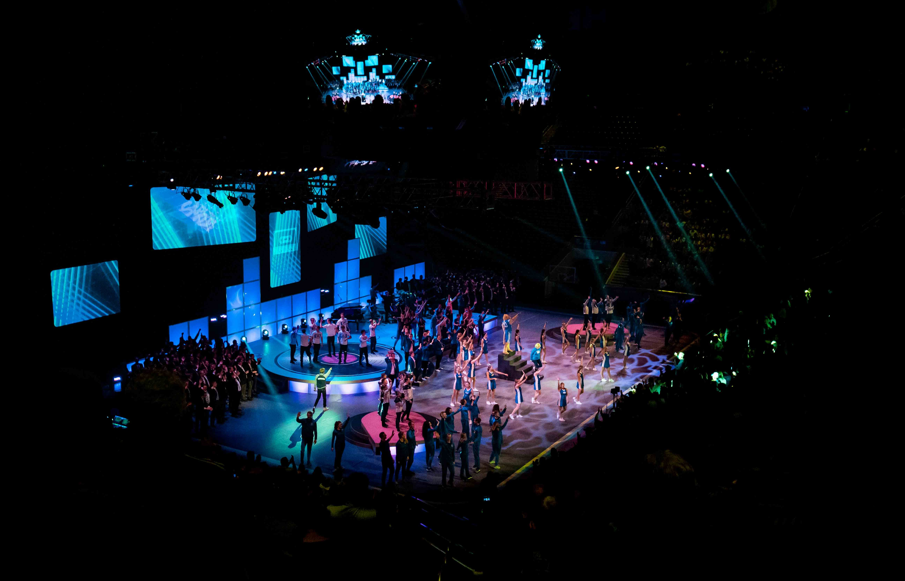
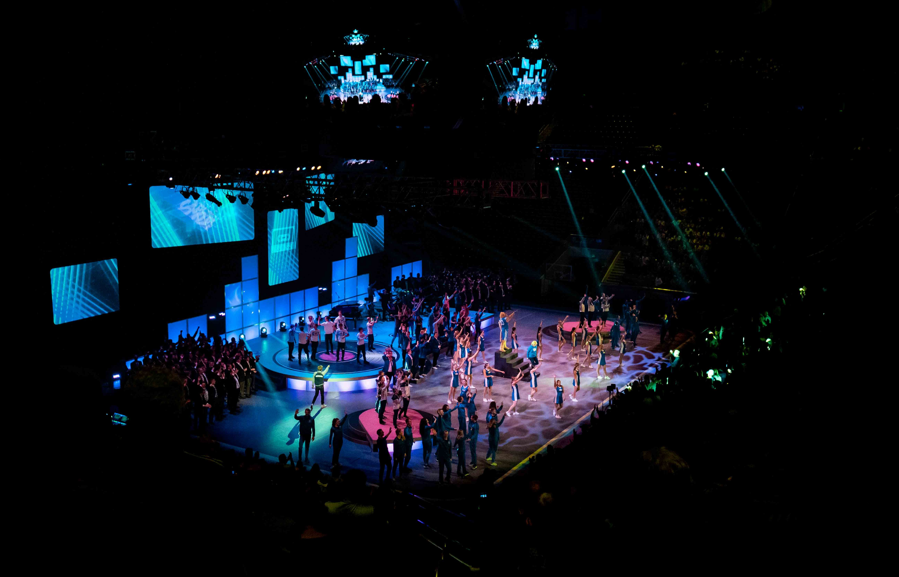

The World's Farthest Basket Toss 3-Point Dunk
First Mascot to do a Triple Backflip
The Dunk Team

Traveling Performances
BYU Spectacular, Huntington Beach Show, Cokeville Dunkshow, Sevier County Rodeo, Parades, travel with football team.
BYU Spectacular, Huntington Beach Show, Cokeville Dunkshow, Sevier County Rodeo, Parades, travel with football team.